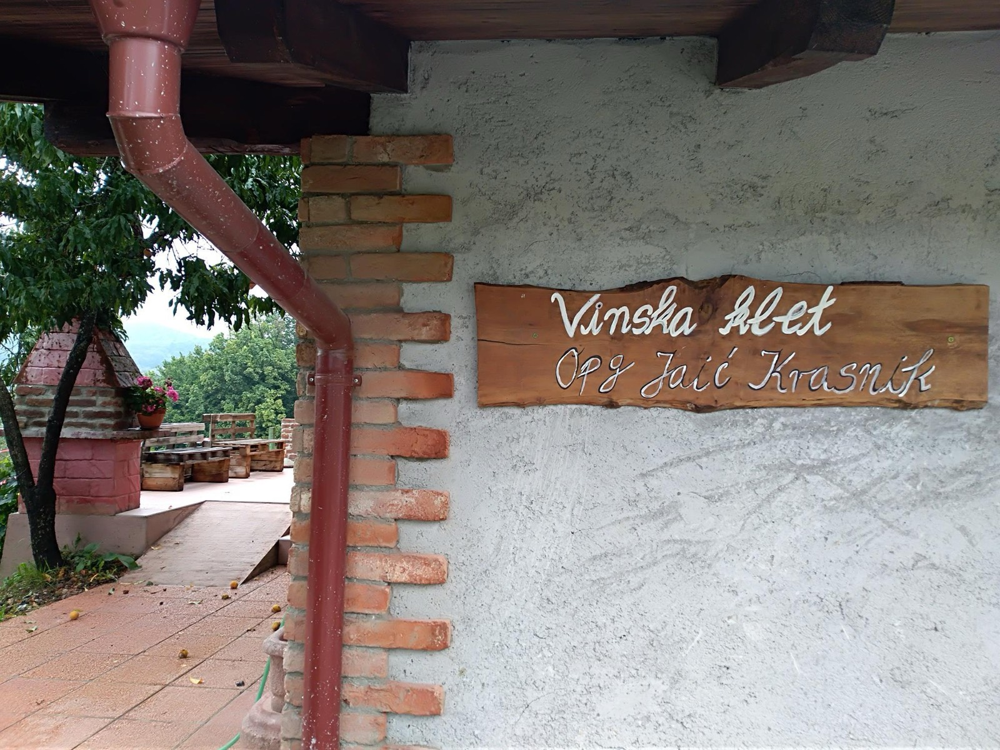
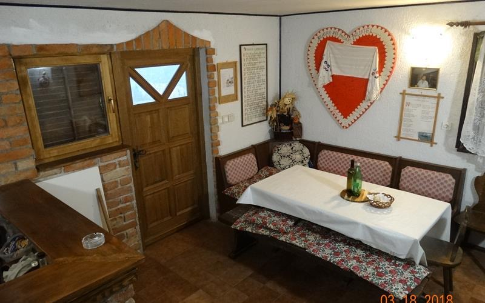
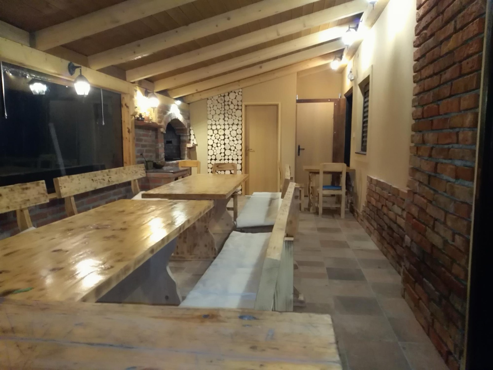
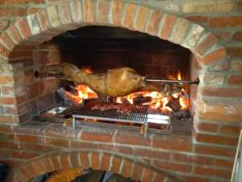
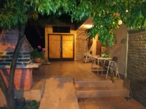
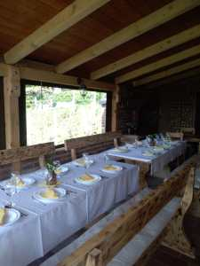

Od vinogradado stola,od kupine do čaše.
Obitelj Jaić Krasnik radi vino od 1971. godine. Danas u Manjoj Vasi uzgajaju kupine iz ekološkog nasada i od njih rade kupinovo vino Don Kupino, džem i sokove, a sve se može kušati u izletištu Pri Braceku u Cerju Samoborskom.


Otac i sin, vino i kupina
Otac i sin spojili su znanje i iskustvo i posvetili se vinu „od vinograda do stola”: od vlastitog grožđa u Manjoj Vasi do čaše na stolu. S vremenom je glavnu ulogu preuzela kupina.
Početak obiteljskog vina
Obiteljsko poljoprivredno gospodarstvo Jaić Krasnik ima dugu tradiciju proizvodnje vina, od 1971. godine.
Vinogradi u Manjoj Vasi
Vinogradi obitelji nalaze se u selu nadomak Samobora, u Manjoj Vasi, na položaju Močvarka. Ondje rastu graševina i grožđe miješanih sorti.
Primat preuzima kupina
Kupine se njeguju u ekološkom uzgoju na plantaži obiteljskog gospodarstva. Od njih nastaju kupinovo vino Don Kupino, džem i prirodni sokovi.
Kušaonica Pri Braceku
Od 2019. OPG se može posjetiti u novootvorenoj kušaonici vina, izletištu Pri Braceku u Cerju Samoborskom, usred samoborskog gorja.
Kupina iz ekološkog nasada, u boci i u staklenci
Kupinovo vino obitelji Jaić Krasnik zove se Don Kupino i nastaje od kupina iz ekološkog nasada na obiteljskoj plantaži. Pod istim imenom rade i džem od pasiranih kupina, a uz njih i domaće sokove.





Kušaonica i mali obiteljski restoran
Gurmanska tradicija u obitelji prenosi se kroz nekoliko generacija. U izletištu Pri Braceku, u prirodi samoborskog gorja, uz vina, sokove i suhomesnate proizvode pripremaju i poslužuju tradicionalna jela samoborskog kraja.
Radno vrijeme
- Ponedjeljak – petak
- 15:00 – 20:00
- Subota – nedjelja
- 11:00 – 20:00
Prema podacima Turističke zajednice grada Samobora. Prije dolaska, osobito s većim društvom, nazovite.
Najavite dolazak ili naručite vino
Pošaljite upit za stol Pri Braceku, kupnju kupinovog vina, džema ili poklon paketa. Dostava je moguća, dogovara se izravno s obitelji.
Izletište Pri Braceku
Cerje Samoborsko 91 I, 10430 Samobor
Otvori u Google kartama
Telefon
E-mail i Facebook
Sjedište OPG-a
Bašćanske ploče 7, 10430 Samobor
Vinogradi i nasad kupina: Močvarka, Manja Vas